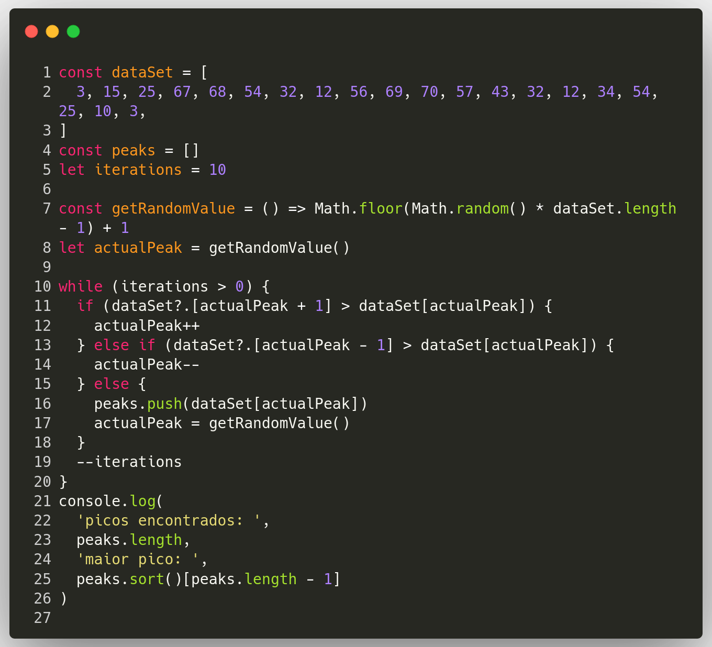

Hillclimbing
Hillclimbing destina-se a encontrar algo chamado 'máximo local'. Imagine um gráfico com vários picos e vales, uma maneira de encontrar o pico mais alto seria escolher uma posição aleatória e começar a subir. Você pode acabar em um pico que não é o mais alto, mas as chances são de que, se você fizer isso várias vezes, encontrará o pico mais alto.
O código abaixo repete esse processo 10 vezes, retorna quantos picos encontrou e o pico mais alto entre esses.
Em seguida há um exemplo visual do mesmo algoritmo apresentado anteriormente com dados gerados aleatóriamente e sem limite de iterações, onde é possível ver o algoritmo rodando em busca do pico mais alto.
Ao clicar no botão abaixo é possível gerar novos dados aleatórios.